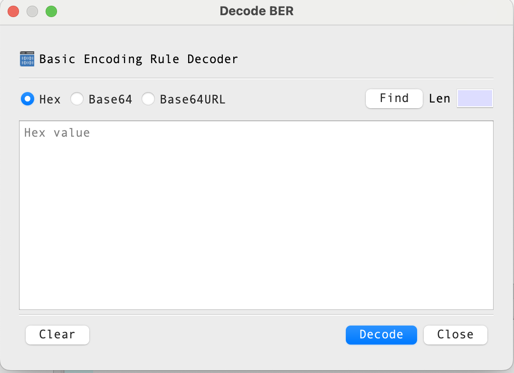

Decode BER Dialog Guide
The Decode BER dialog converts BER data entered as text into bytes and loads it into BerEditor for decoding. Open it from Tool > Decode BER.

Figure 1. Decode BER dialog. The format controls and file picker are above the input area; Clear, Decode, and Close are along the bottom.
Screen Areas
- Input format — Choose Hex, Base64, or Base64URL. The selected option determines how BerEditor interprets the text in the input area.
- Find — Opens a file picker to load a BER file into the input area.
- Len — Shows the calculated data length for the current input and format. This field is read-only.
- Input area — Enter or paste the encoded data. Its placeholder indicates the selected format.
- Clear — Removes the text from the input area.
- Decode — Decodes the input and loads it into the main BerEditor window.
- Close — Closes the dialog.
Dialog Controls
| Control | Description |
|---|---|
| Hex | Treats the input as hexadecimal data. This is the default format. |
| Base64 | Treats the input as Base64 data. The input may also be a PEM value. |
| Base64URL | Treats the input as URL-safe Base64 data. |
| Input area | Enter or paste the encoded data here. The placeholder changes with the selected format. |
| Len | Displays the calculated data length for the current format. It is read-only. |
| Find | Selects a BER file and loads its contents into the input area using the selected format. |
| Clear | Clears the input area. |
| Decode | Decodes the entered data and loads it into the main BerEditor window. |
| Close | Closes the dialog. |
Decode Data
- Open Tool > Decode BER.
- Select the input format: Hex, Base64, or Base64URL.
- Enter or paste the encoded data into the input area.
- Review the value shown in Len.
- Select Decode.
When decoding succeeds, the dialog closes and BerEditor displays the decoded data in the main window. If the input area is empty, the application asks you to enter data. If the data cannot be parsed in the selected format, a format error is displayed.
Load Data from a File
- Select the desired input format.
- Select Find and choose a BER file.
- The file contents are placed in the input area in the selected format.
- Select Decode to load the data into the main window.
The file picker checks that the selected file can be read as BER data. If it is not a valid BER file, BerEditor displays an error.
Drag and Drop
You can drag a local file onto the dialog to load it into the input area. The dialog converts the file contents to the currently selected representation: hexadecimal, Base64, or Base64URL. Then select Decode to inspect the data.
Tips
- Make sure the selected format matches the text you entered. For example, choose Base64URL for URL-safe Base64 text.
- Use Clear before entering a different value if you want to avoid mixing it with existing input.
- Len is calculated from the selected encoding; it is not an editable field.
- The dialog processes BER data. Other data formats may produce a decoding or format error.